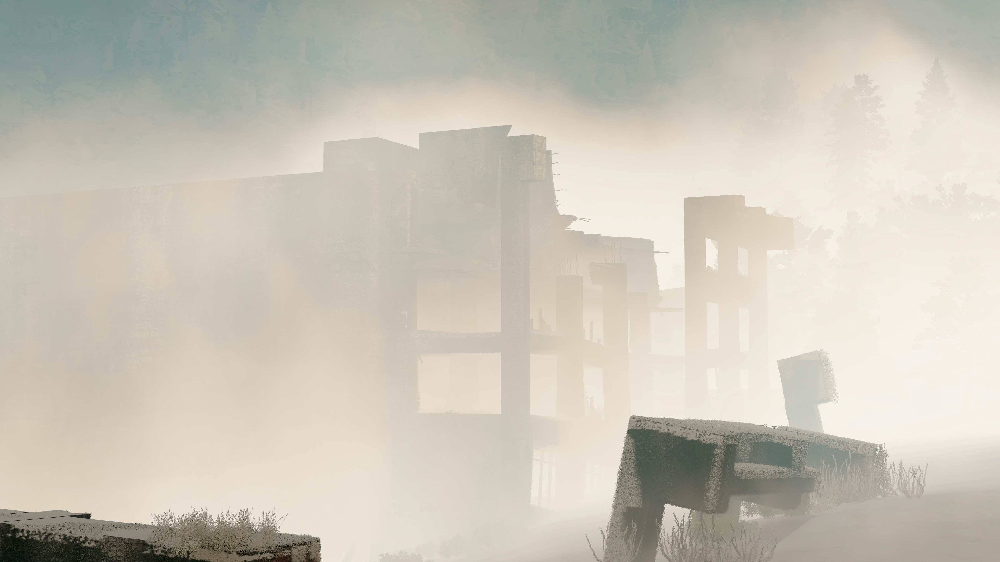

Attack on Tenebrous City
Tenebrous City, a city still reeling from the after effects of a major catastrophe has fallen victim to a plot to disrupt supply lines, and overthrow the local government.
8/13/2087Smith Smithson

A rebel cell calling themselves The Liberators, lead by form ASR Officer Vearin Terrill, took over the
city claiming that the government is
using the recent attacks as a coverup to increase its military presence, and enact more restrictions.
These "Liberators" used the militaries own state of the art defensive seawall, and barricades to entrap local law enforcement, and to counter the military counter strike. The automated seawall defenses alone shot down over 15 aircraft promting a ground assault.
The ground forces fared little better, as the automatic defense systems had been re-programmed to ignore standard IFF frequencies.
However, there were only 3 reported casualties, a single Law Enforcment Officer, and 2 ground troopers who were caught in a tunnel collapse caused by UNE forces. All pilots ejected safely, despite the seawall being initially programmed to shootdown parachutes. There must have been an error in the system.
The "Liberators" later relinquished control of Tenebrous City stating quote "If it was this easy for us a small group with little supplies or training, to take over a major city, how easy would it be for another nation.
With how readily these 'state of the art' defenses could hold its own city hostage, are they really for defense, or control?"
Since then, the entierty of The "Liberators" have fled the UNE for JSC space.
Anyone with information on their whereabouts, especially information on their leader "Vearin Terrill" is urged to contact the UNE hotline at 76871153 immediately.
The contents of this article may have been modified in part or wholly by: UNE CC